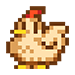
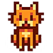

Stardew Valley é um jogo independente de simulação e RPG onde seu objetivo é recuperar e evoluir a antiga fazenda herdada de seu avô. Todos os aspectos do jogo (inteligência artificial, imagens, personagens, efeitos, música, etc) foram desenvolvidos por uma única pessoa, Eric "ConcernedApe" Barone, que levou quase 5 anos para completar sua obra, esta, que iniciou de maneira amadora e despretensiosa com o objetivo de treinar suas habilidades de programação e desenvolvimento de games.
Lançado inicialmente em 2016 e disponivel nas principais plataformas, Stardew Valley é reconhecido como o jogo indie de maior sucesso da história.
Curiosidades

É inspirado e conhecido como o sucessor espiritual do clássico Harvest Moon
Em setembro de 2021 bateu a marca de 15 milhões de cópias vendidas.
